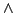
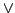
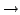
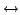
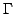
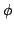

Universidade Regional de Blumenau
Centro de Ciências Exatas e Naturais
Departamento de Sistemas e Computação
Lógica para Ciências da Computação
Professor: Jomi Fred Hübner e Joyce Martins

|
Universidade Regional de Blumenau
|
|
Prova automática
Iniciar o uso do ambiente Prolog e utilizar uma ferramenta de prova automática de teoremas.
Este texto descreve um roteiro a ser seguido para atingir o objetivo acima. Contudo, você é o sujeito desse processo, é você que deve ler, compreender, realizar e avaliar o roteiro apresentado. Apenas ``executar'' os comandos sugeridos, não lhe acrescentará nada.
Neste exercício será utilizado o SWI-Prolog (http://www.swi-prolog.org). Baixe e instale este programa (nos laboratórios do LCI este programa já esta instalado).
Para chamar este programa no linux, digite em um terminal de comandos:
pl
Para chamar este programa no windows, selecione-o no menu ``iniciar''.
Uma vez carregado o programa, aparece o seguinte ``prompt''
?-onde comandos prolog podem ser digitados.
Para sair do Prolog, utilize o comando halt.
Baixe da página da disciplina a biblioteca de lógica (http://www.inf.furb.br/~jomi/logica/tools). Grave o arquivo em no seu diretório pessoal (H: ou /lp/home/<username>).
Descompacte o arquivo. No linux, em um terminal de comandos digite:
cd
unzip logPropTool.zip
cd logPropTool
Seu diretório de trabalho deve ficar com um subdiretório chamado logPropTool onde estão os arquivos da biblioteca.
Para carregar um programa prolog no interpretador, pode-se utilizar o comando consult com o nome do arquivo como parâmetro (sem a extensão .pl, que é utilizada para programas Prolog):
?- consult('resolution').
o arquivo resolution.pl será carregado. O diretório corrente
deve ser o diretório onde está este arquivo. Se esse não for o caso,
informe o caminho completo para o arquivo 'resolution', por exemplo,
no linux:
?- consult('/lp/home/fulana/logica/resolution').
ou no windows:
?- consult('c:\\logica\\resolution').
Para escrever as fórmulas, os seguintes caracteres serão utilizados:
| Símbolo | Caracteres |
|---|---|
| ¬ | ~ |
|  | & |
|  | v |
|  | -> |
|  | <-> |
Exemplo: a fórmula (PQ) ¬(Q R) fica (p v q) <-> (q -> r).
Para imprimir uma tabela verdade, utilize o comando truthTable(<fórmula>). Exemplo:
Para obter a FNC de uma fórmula, utilize o comando transCNF(<fórmula>). Por exemplo, tente as seguintes transformações:
?- transCNF(a -> b). .......<aparece a FNC>..... ?- transCNF(a v (b & (x <-> y))). .......<aparece a FNC>.....
(Pesquise nas referências indicadas em sala e/ou na Internet o que é a FNC)
Uma fórmula é um teorema se existir uma prova para ela sem necessidade de nenhuma premissa. É portanto uma tautologia, contudo sua verificação é feita por meio de uma prova e não tabelas verdade. Para verificar se uma fórmula é teorema, utilize o comando theorem(<fórmula>).
Utilizando o comando theorem, verifique se as seguintes fórmulas são teoremas:
Qual a técnica de prova utilizada por este provador? Utiliza refutação? Utiliza resolução?
Dado que
Pode-se concluir que a aula será boa?
Para verificar   com o provador automático, verifica-se se é teorema (denota-se por ). No exemplo do Marcos, deve se verificar se ((S H)(H G)S) G é um teorema.
Verifique as conclusões dos exemplos dos Detetives, Socrates/Platão e Ana*, vistos em sala e disponíveis em http://www.inf.furb.br/~jomi/logica/slides/logProp.pdf, utilizando a verificação automática de teoremas.
Caso se deseje guardar em um arquivo o resultado da execução, o SWI-Prolog pode ser executado informando o local para onde deve ser direcionado o resultado da execução. Por exemplo (repare que se está no prompt de comandos do sistema operacional e não do prolog):
pl -f resolution.pl -g 'theorem( (a & (a -> b)) -> b ), halt' > saida.txtNo arquivo saida.txt está o resultado da prova. Se não for incluído > saida.txt a saída do programa será na tela.